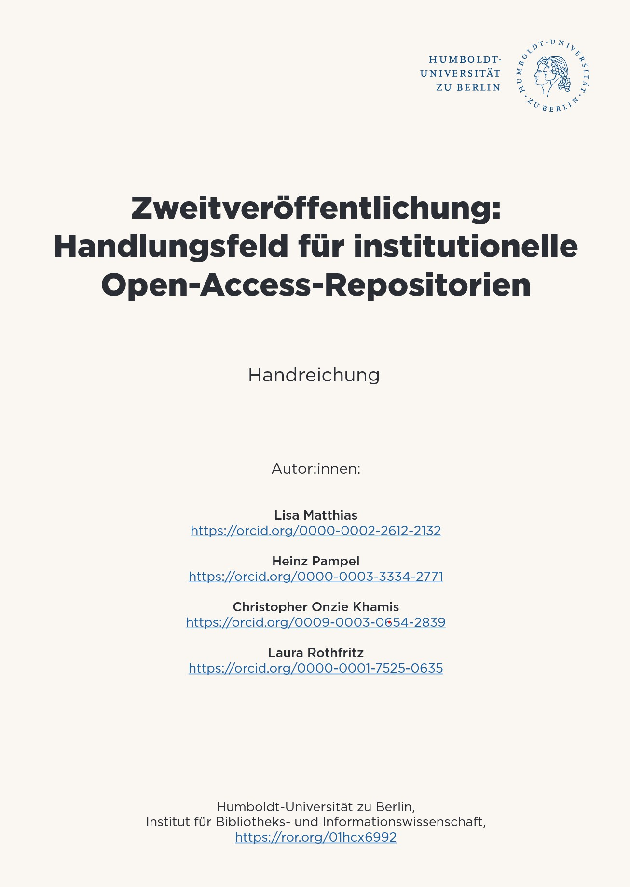

![]()
We are pleased to announce the publication of our third guide from the BMFTR-funded (Federal Ministry for Research, Technology and Space) project “Professionalisierung der Open-Access-Repositorien-Infrastruktur in Deutschland (Pro OAR DE)”: “Zweitveröffentlichung: Handlungsfeld für institutionelle Open-Access-Repositorien” (available in German only).
Matthias, L. Pampel, H., Khamis, C. O. & Rothfritz, L. (2025). Zweitveröffentlichung: Handlungsfeld für institutionelle Open-Access-Repositorien. Handreichung. https://doi.org/10.5281/zenodo.16810750

This guide documents the outcomes of our networking forum “Institutionelle Repositorien und Zweitveröffentlichung” (Institutional Repositories and Secondary Publication), held on January 13, 2025, which brought together nearly 100 Open Access professionals from across Germany.
Experts Sonja Härkönen (Universität Augsburg) and Tomasz Stompor (Kooperativer Bibliotheksverbund Berlin-Brandenburg) presented concrete strategies for secondary publication. Webinar participants then collaborated in thematic working groups, exchanging institutional experiences and co-developing practical solutions to common challenges. The presentation slides are available online.
The guide consolidates these collective insights into practical recommendations organized around six essential areas for repository operations:
1. Supporting Researchers
A central challenge identified was bridging the gap between researcher needs and library requirements, particularly regarding manuscript versions. While libraries typically work with Author Accepted Manuscripts (AAMs), researchers often prefer using the Version of Record (VoR) for secondary publication. Low awareness of institutional repositories awareness frequently prevents researchers from considering secondary publication altogether. Participants recommended strengthening the institutional presence of Open Access officers as central contact points, integrating Open Access topics into training programs, developing efficient workflows through connection with existing structures, and implementing automated notification systems for publication opportunities. Participants emphasized that secondary publication should not burden researchers but rather serve as a professional library service that minimizes administrative and technical effort.
2. Open Access Policies of Funding Organizations
Participants stressed the need for clear communication and comprehensible guidelines. They called for concrete frameworks for secondary publication, including a maximum embargo period of 12 months and use of the VoR. Sustainable availability should be ensured through long-term archiving in certified repositories. Given the inconsistent success with implementation, participants discussed whether stronger political mandates from federal and state governments could foster a more consistent Open Access landscape.
3. Publisher Open Access Policies
Participants identified core elements for transparent publisher policies: clear definitions of permitted secondary publication strategies, permissible manuscript versions and publication venues, and precise specifications regarding embargo periods, licensing conditions, and citation requirements. For legal certainty, they recommended documenting each publisher policy through screenshots or PDF exports. Practical tools and direct publisher contact were also recommended. To optimize processes, participants suggested verifying upfront whether authors possess the required manuscript version. Active networking in the open-access.network focus group on secondary publication.
4. Workflows and Opportunities for Automation
Participants emphasized aligning secondary publication processes with institutional priorities, particularly to promote Green Open Access. Technical solutions highlighted included open-source applications and automated interfaces to rights-checking platforms. For capturing publications, they recommended ORCID profiles, subject database exports, and specialized library tools. Participants prioritized standardization as a critical prerequisite for automation: routine procedures, email templates, and centralized documentation systems for publisher policies can significantly streamline workflows. They also recommended anchoring mandatory submission of accepted manuscript versions in institutional publication policies.
5. The Role of Green Open Access in the Open Access Transformation
Participants discussed resource challenges, observing that Gold Open Access tends to absorb most institutional capacity, leaving Green Open Access to be managed as a secondary priority. Nevertheless, some institutions reported successful Green publication pathways supported by technical solutions such as self-submission systems with rights transfer options and automated reminders. Despite declining significance due to transformative agreements, participants emphasized the strengths of the Green route: cost-free access would enable all institutions to participate in the Open Access movement, especially for older publications with restricted access. The increase in secondary publication could be strategically leveraged in future publisher negotiations, with the role of preprints considered in a differentiated, discipline-specific manner.
6. Reform of Secondary Publication Rights
Participants called for secondary publication of publisher versions under short embargo periods with CC BY licenses. The current 12-month embargo period was criticized as too long, as was the difficult-to-verify 50% funding clause in the German Copyright Act (UrhG § 38 Abs. 4). They recommended a multi-step approach to rights verification, systematic documentation of publisher policies, and interpreting them in favor of authors. Library and institutional leadership should be encouraged to actively utilize secondary publication rights, particularly given the difficulty of obtaining early manuscript versions in disciplines without established preprint cultures.
7. Additional Challenges
Participants identified technical challenges in the interaction between research information systems and repositories, particularly the need to distinguish between primary and secondary publications using metadata. Other core challenges included legal consultation, compliance with funding requirements, and the resource-intensive article acquisition process. Recommended solutions included increased networking for exchanging best practices, workflow automation, and adequate staffing capacity. Participants particularly emphasized the untapped potential of UrhG § 38 Abs. 4 and the need for systematic public outreach regarding secondary publication services.
This guide provides a foundation for continued professional exchange on secondary publication practices. Repository operators, libraries, and institutional decision-makers will find valuable insights for developing effective secondary publication workflows that support both researchers and institutional Open Access goals. We extend our sincere thanks to all forum participants who contributed their expertise and experience to this collaborative effort. We welcome your feedback and look forward to continuing this important dialogue as we collectively strengthen the Open Access repository landscape in Germany and beyond. BTW: We just published a study in the Journal of the Association for Information Science and Technology (JASIST): https://doi.org/10.1002/asi.70016. In this systematic review, we examine the key challenges institutional repositories face in advancing Open Access and supporting the dissemination of scholarly work. These include issues of strategic alignment, sustainable funding, staffing, technology, and researcher engagement. Our findings underscore the importance of integrating IRs with institutional strategies, strengthening professional and technical capacities, and ensuring consistent support to reinforce IRs as vital components of the Open Science ecosystem. For more information about Pro OAR DE and our upcoming activities, please visit our website. This text – excluding quotes and otherwise labeled sections – is licensed under the CC BY 4.0 DEED.
References
Citation
@online{matthias2025,
author = {Matthias, Lisa and Pampel, Heinz and Onzie Khamis,
Christopher},
title = {Institutional {Repositories} and {Secondary} {Publication:}
{A} {New} {Guide} from {Pro} {OAR} {DE}},
date = {2025-11-06},
url = {https://infomgnt.org/posts/2025-11-06-institutional-repositories-and-seconndary-publication/},
langid = {en}
}